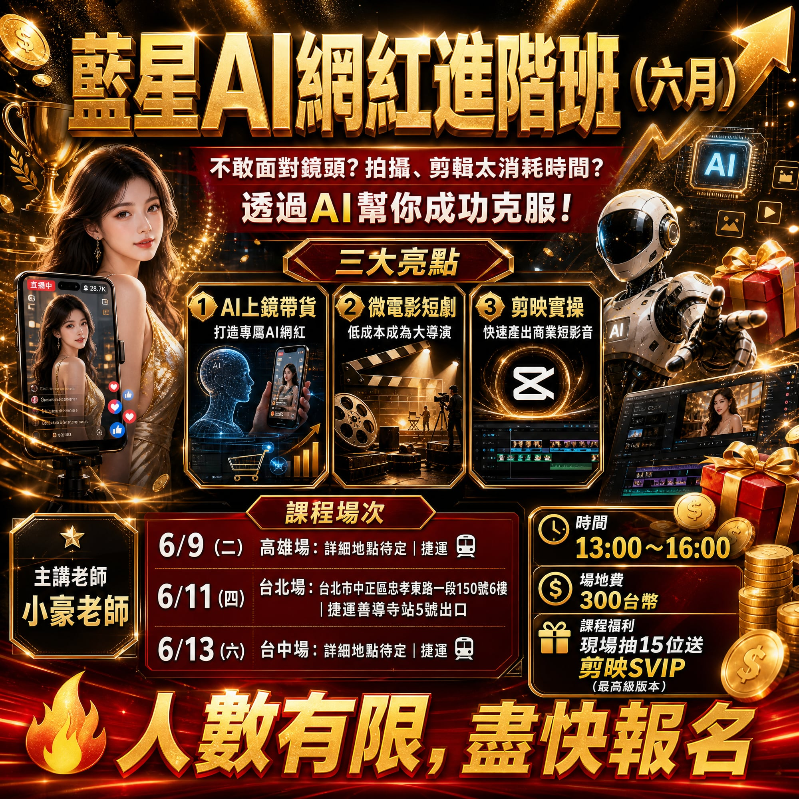

提交需求
說明目前業務、內容或流程卡點，先確認最值得 AI 化的工作。
說明目前業務、內容或流程卡點，先確認最值得 AI 化的工作。
規劃工具組、素材規格、作業節點與導入節奏，讓團隊能跟上。
透過課程、顧問與系統化模板，把 AI 變成日常產能。
Why Blue Star
藍星科技不是只教工具操作，而是把你的獲客、內容、成交與內部作業整理成可複製流程。每一次導入都以「能不能省時間、能不能增加成交、能不能讓團隊持續使用」為核心。
Service Entry
依照你現在最需要解決的任務，選擇對應服務。每個方案都能延伸成課程、顧問或完整代建。
Getting Started
把需求拆成短週期，不讓 AI 導入停在想法。每一步都有明確交付物。
確認目標客群、現有資源、團隊人力與最急迫的營運痛點。
整理 AI 工具、素材格式、任務分工與自動化節點。
建立可重複使用的提示詞、表單、內容模板、檢查表與操作文件。
陪團隊完成第一輪產出，修正流程，讓成果能持續複製。

Stories
無論是個人品牌、地方商家、課程講師或企業團隊，都能從一個具體流程開始。
把一個產品賣點延伸成腳本、貼文、圖片與短影音素材。
把重複填表、回覆、整理資料與通知流程標準化。
用工作任務設計課程，讓學員上完課就能直接使用。